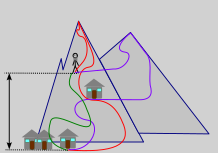
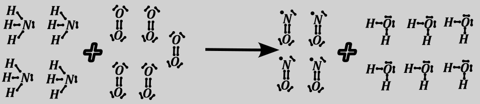
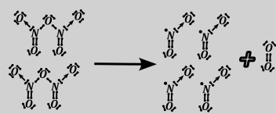
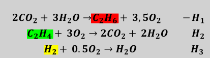
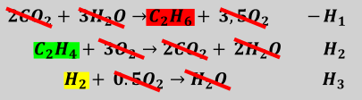
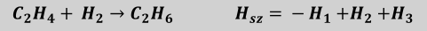
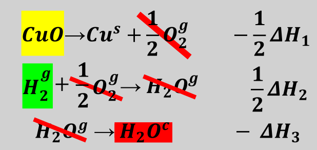
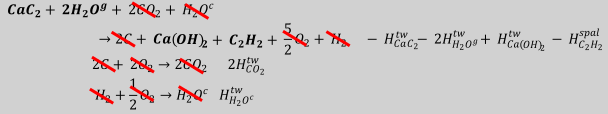
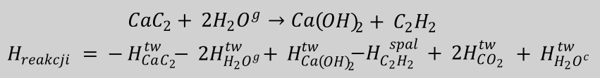

Funkcja stanu jest to parametr układu, który niezależny jest od drogi przemiany, a zależny tylko od stanu początkowego i końcowego. Zmiana tego parametru to jest różnica między punktem końcowym i początkowym. Możemy przytoczyć jako przykład różnicę wysokości nad poziomem morza:

Różnica wysokości nad poziomem morza zależna jest tylko od punktu, w którym rozpoczynam wycieczkę i ją kończę, a niezależna od tego, jaką trasę wybrałem poszedłem. Oczywiście nie wszystkie parametry są funkcjami stanu – przemierzony dystans wyprawy bądź suma wysokości podejść zależy od wybranej trasy.
I chemii są trzy ważne parametry będące funkcją stanu:
Entalpia - \(\Delta H\) – zmiana energii wiązań w trakcie procesu (przy stałym ciśnieniu)
\(\Delta H\ \ > 0\) : entalpia większa od zera znaczy, że energia się wydziela ;tzn. substraty mają więcej energii wiązań niż produkty – więc gdzieś ta energia musiała pójść, a poszła najpewniej na ogrzanie układu, układ się ogrzewa, reakcja egzotermiczna lub egzoenergetyczna
\(\Delta H\ \ < 0\) : entalpia mniejsza od zera znaczy, że energia się wydziela ;tzn. substraty mają mniejs energii wiązań niż produkty, podczas reakcji pobierana jest energia, układ się ochładza, reakcja endotermiczna lub endoenergetyczna
Entropia \(\mathbf{\Delta S\ }\) jest miarą nieuporządkowania układu inaczej miarą nieporządku
\(\Delta S\ > 0\) układ robi się coraz bardziej nieuporządkowany, wzrasta bałagan, wymieszanie reagentów. Np. wywalenie skarpet z szafki, porozrzucanie ich po podłodze, brudnych, czystych, kolorowych, czarnych razem jest przykładem procesu gdzie entropia rośnie.
\(\Delta S\ > 0\) porządkujemy układ, maleje bałagan, reagentów są bardziej rozdzielone. Przykładem jest porządkowanie skarpetek.W chemii klasycznym procesem, w którym entropia rośnie jest proces mieszania gazów. Proces wytrącania soli jest z kolei typowym procesem, w którym maleje entropia.
Energia Gibbsa (entalpia swobodna) \(\mathbf{\Delta G\ }\) mówi o samorzutności procesu
\(\Delta G\ < \ 0\) mówi o tym, że dany proces jest samorzutny (dozwolony), preferowane produkty bardziej niż substraty, reakcja może zachodzić, jednak czy zachodzi zależne jest również od kinetyki reakcji i przekroczenia energii aktywacji.
\(\Delta G\ \mathbf{>}\ 0\) to proces niesamorzutny, preferowane są substraty, reakcja nie może zachodzić– w przewadze zawsze będą substraty, dla wysokich \(\Delta G\) reakcja w ogóle nie może zachodzić.
\[\Delta G\ = \Delta H\ –\ T\Delta S\]
Gdzie \(\Delta H\) entalpia reakcji, \(\Delta S\) entropia reakcji, natomiast \(T\) oznacza temperaturę w Kelvinach.
Żeby \(\Delta G\) było jak najmniejsze (proces jak najbardziej preferowany) to \(\Delta H\) musi być jak najmniejsza, natomiast \(\Delta S\) jak największa. Każdy układ dąży do minimum energii i maksimum entropii (maksymalnego nieporządku), a jak nie wierzymy to wystarczy spojrzeć, co się dzieje po imprezie.
Stała równowagi w ujęciu termodynamicznym zdegionowana jest jaka
\[\Delta G\ = - RT\ ln\ K\]
Więc stała równowagi jest równa
\[K = e^{- \frac{G}{RT}}\]
Gdzie \(\Delta G\) - Gibbs, \(R\) - stała gazowa, \(T\) - temperatura w Kelvinach \(\ln\) –logarytm naturalny, \(K\ \) – stała równowagi reakcji.
W tablicach maturalnych zostały stablicowane następujące entalpie:
Entalpia tworzenia – to entalpia (hipotetycznej) reakcji utworzenia 1 MOLA zadanego produktu, z substancji w stanie podstawowym (czyli pierwiastków w takim stanie skupienia i formie alotropowej w jakim występują w danej temperaturze w przyrodzie np. \(H_{2}^{g},\ \ I_{2}^{g}\ \ \ C_{grafit}^{st}\) ). W równaniu mówiącym o entalpii tworzenia musimy mieć jeden mol substratu, narzuca to inne współczynniki stechiometryczne, nawet jeżeli będą niecałkowite. Np. reakcje tworzenia \(HI\) i \(HBr\) wyglądają następująco, współczynniki mogą być niecałkowite, ważne aby współczynnik przed reagentem, który otrzymujemy był jeden:
\[\frac{1}{2}H_{2}^{g} + \frac{1}{2}I_{2}^{st} \rightarrow 1HI\ \ \mathrm{\Delta}H_{HI}^{tw} =\]
\[\frac{1}{2}H_{2}^{g} + \frac{1}{2}{Br}_{2}^{ciekly} \rightarrow 1HBr\ \ \mathrm{\Delta}H_{HBr}^{tw} =\]
Różnica wynika z różnych stanów skupienia w warunkach standardowych bromu i jodu.
Analogicznie reakcja tworzenia \(Ca(OH)_{2}\)
\[Ca^{st} + O_{2}^{g} + H_{2}^{g} \rightarrow 1Ca(OH)_{2}\ \ \mathrm{\Delta}H_{Ca(OH)_{2}}^{tw} =\]
Należy podkreślić, iż zawsze wychodzimy ze związków jednopierwiastkowych, woda nie jest pierwiastkiem wbrew szkole TVP
Entalpia tworzenia substancji w stanie podstawowym jest równa zero z definicji, w takiej przemianie nie ma żadnej zmiany.
\[O_{2}^{g} \rightarrow O_{2}^{g}\ \ \ \mathrm{\Delta}H_{tw}^{O_{2}} = 0\ bo\ się\ nic\ nie\ zmienia.\]
Oczywiście entalpia tworzenia formy alotropowej, która nie jest podstawową dla danego pierwiastka formą alotropową już będzie miała niezerową wartość entalpii tworzenia.
\[\frac{3}{2}O_{2}^{g} \rightarrow O_{3}^{g}\ \ \ \ H_{tw}^{O_{3}} \neq 0\]
Podstawową formą alotropową podstawową jest grafit ,a nie diament.
Uwaga na fazy, bo jak dobrze wiemy faza się musi zgadzać np. woda ciekła i woda gazowa to są dwie różne wody, dwie różne substancje z punktu widzenia termochemii. Mamy dla nich dwie różne entalpie tworzenia.
| \[H_{2}O^{c}\] | \[- 285.8\] |
|---|---|
| \[H_{2}O^{g}\] | \[- 241.8\] |
\[H_{2} + \frac{1}{2}O_{2} \rightarrow H_{2}O^{g}\ \ \ \ H_{tw}^{H_{2}O^{g}} = - 241.8\frac{kJ}{mol}\]
\[H_{2} + \frac{1}{2}O_{2} \rightarrow H_{2}O^{c}\ \ \ \ H_{tw}^{{H_{2}O}^{c}} = - 285.8\frac{kJ}{mol}\]
Entalpia spalania – entalpia spalenia 1 MOLA zadanego substratu konkretnie do \(CO_{2}^{g}\ i\) \(H_{2}O^{c}\) Faza ma znaczenie, dwutlenek węgla ma być gazowy, a woda ciekła. Współczynnik stechiometryczny przed spalanym reagentem musi być równy jeden, nawet jeżeli inne współczynniki są niecałkowite
\[\ \text{ }1C_{2}H_{2}^{g} + 2.5O_{2}^{g} \rightarrow 2CO_{2}^{g} + H_{2}O^{c}\ \ \ \mathrm{\Delta}H_{spal}^{C_{2}H_{2}} =\]
Na podstawie znajmości entalpii tworzenie i spalania możemy obliczyć wartości innych poszukiwanych entalpii.
Dwa ważne wzory, które umożliwiają szybkie liczenie entalpii, ale jednocześnie one się bardzo łatwo mylą i w sumie są mocno ograniczone, ale nauczyciele też są więc je lubią. Nauczyciele też często są ograniczeni.
Jeżeli WYKORZYSTUJESZ tylko entalpię tworzenia do obliczania entalpii poszukiwanej reakcji (nie jest ważne, jaka to reakcja może być to np. entalpia reakcji spalania) entalpia ta może być wyliczona ze wzoru:
\[{\mathrm{\Delta}H}_{reakcji} = \sum_{}^{}{\mathrm{\Delta}H_{prod}^{tw}} - \sum_{}^{}{\mathrm{\Delta}H_{subst}^{tw}}\]
Odpowiednie entalpie tworzenia reagentów mnożymy razy współczynniki stechiometryczne reakcji.
Np. Chcąc obliczyć entalpie reakcji
\[\text{ }3FeO + 2Al \rightarrow Al_{2}O_{3} + 3Fe\]
Możemy napisać, że entalpia tej reakcji
\[{\mathrm{\Delta}H}_{reakcji} = \sum_{}^{}{\mathrm{\Delta}H_{prod}^{tw}} - \sum_{}^{}{\mathrm{\Delta}H}_{subst}^{tw} = \left( {\mathrm{\Delta}H}_{Al_{2}O_{3}}^{tw} + 3\mathrm{\Delta}H_{Fe}^{tw} \right) - \left( 3H_{FeO}^{tw} + 2H_{Al}^{tw} \right) =\]
I teraz patrzę czy któreś z tych substancji nie są substancjami w stanie podstawowym, w tym wypadku to żelazo i glin. Entalpie ich tworzenia muszą być, więc równe zero i resztę entalpii tworzenia odnajduję w tablicach maturalnych. Wstawiając dane otrzymujemy:
\[{\mathrm{\Delta}H}_{reakcji} = (‒1675.7 + 3·0) - (3·(‒272.0) + 2·0) = - 858.2\frac{kJ}{mol}\]
Z bardzo podobnego wzoru korzystamy obliczając entalpii dowolnej reakcji WYKORZYSTUJĄC entalpie reakcji spalania, ale uwaga, bo wzór jest na opak wobec poprzedniego:
\[{\mathrm{\Delta}H}_{reakcji} = \sum_{}^{}{\mathrm{\Delta}H}_{subst}^{spal} - \sum_{}^{}{\mathrm{\Delta}H}_{prod}^{spal}\]
Mnemotechnia: jak masz wzór na tworzenie (produkcje) to pierwsze jest p rodukcji p roduktów, a jak wzór na spalenie to masz pierwsze s palenie s ubstratów. Metoda SS .
Aby obliczyć entalpię reakcji
\[3C_{2}H_{2} \rightarrow C_{6}H_{6}\]
Możemy napisać:
\[H_{reakcji} = \sum_{}^{}{3·H_{C_{2}H_{2}}^{spal}} - \sum_{}^{}H_{C_{6}H_{6}}^{spal} = 3·( - 1300) - ( - 3267) = - 633\frac{kJ}{mol}\]
Analogicznie możemy obliczyć entalpię reakcji:
\[C_{2}H_{4} + C_{2}H_{6} \rightarrow C_{4}H_{10}\]
\[H_{reakcji} = \sum_{}^{}{\mathrm{\Delta}H}_{subst}^{spal} - \sum_{}^{}{\mathrm{\Delta}H}_{prod}^{spal} = H_{C_{2}H_{4}}^{spal} + H_{C_{2}H_{6}}^{spal} - H_{C_{4}H_{10}}^{spal} =\]
Poniższych zależności nie ma na maturze, ale dziwnym trafem, niektóre zbiory zadań je lubią. Obliczanie entalpii reakcji przy użyciu entalpii/energii wiązań
Entalpia/ energia wiązania to ilość energii, którą musisz włożyć żeby to wiązanie rozerwać.
Aby wykorzystać wartości energii wiązań należy najpierw rozrysować sobie na początku substraty i produkty na wzory Lewisa, tak, aby widzieć wszystkie wiązania. Krotność wiązania ma znaczenie, inna jest energia wiązania jednokrotnego, inna dwukrotnego, a inna trzykrotnego.
Dla poniższej reakcji utleniania amoniaku oblicz entalpię reakcji na podstawie energii wiązań, a następnie narysuj wykres energetyczny reakcji i opisz go:
\[4NH_{3}^{g} + \ 5O_{2}^{g} \rightarrow 4NO^{g} + 6H_{2}O^{g}\]
| \[N - H\] | \[O = O\] | \[N = O\] | \[H - O\] |
|---|---|---|---|
| \[390\frac{kJ}{mol}\] | \[499\frac{kJ}{mol}\] | \[631\frac{kJ}{mol}\] | \[465\frac{kJ}{mol}\] |
Musimy sobie na początku rozrysować związki i zobaczyć, jakie w nich występują wiazania.

Widzimy że w substratach jest 12 wiązań N-H (4amoniaki po 3 wiazania) ;5 wiazan O=O; w produktach są 4 wiazania N=O i 12 wiazan O-H (6 wód po 2 wiązania)
\[H_{reakcji} = \sum_{}^{}H_{wiazan}^{substratow} - \sum_{}^{}H_{wiazan}^{produktów},\]
Oczywiście uwzględniamy ile wiązań jednego i drugiego typu tworzymy. Dodatkowo krotność wiązania ma oczywiście znaczenie, czyli wiązanie \(O - O\) i \(O = O\) to sa różne wiazanaia
\[H_{reakcji} = \left( 12·H_{N - H} + 5H_{O = O} \right) - \left( 4·H_{N = O} + 12H_{O - H} \right) = (12·390 + 5·499) - (4·631 + 12·465) = - 929\frac{kJ}{mol}\]
\[2N_{2}O_{5}^{g}\ 2NO_{2}^{g} + \ O_{2}^{g}\]
| N-H | O=O | N=O | H-O | N-O |
|---|---|---|---|---|
| 390 kJ/mol | 499 kJ/mol | 631 kJ/mol | 465 kJ/mol | 210 kJ/mol |
\[H_{reakcji} = \sum_{}^{}H_{wiazan}^{substratow} - \sum_{}^{}H_{wiazan}^{produktów},\]
W tym wypadku należy rozróżnić ilość wiązań podwójnych i pojedynczych pomiędzy tlenem i azotem

\[\text{ }{2N}_{2}O_{5} \rightarrow 4NO_{2} + O_{2}\]
\[H_{reakcji} = \sum_{}^{}H_{wiazan}^{substratow} - \sum_{}^{}H_{wiazan}^{produktów},\]
\[H_{reakcji} = \left( 2·\left( 4H_{N - O} + 2H_{N = O} \right) \right) - \left( 4·\left( H_{N - O} + H_{N = O} \right) + H_{O = O} \right) = \ldots\]
Zadania z starych matur były łatwiejsze, gdyż z uwagi na brak tablic autorzy zadania wskazywali entalpie i reakcje, z których mamy korzystać, aby obliczyć zadaną wartość entalpii szukanej reakcji. Przedstawiona metoda macierzowa jest polecana do matury, szczególnie, jeżeli nie możemy korzystać z podanych powyżej wzorów bo mamy różne entalpie reakcji, a nie same entalpie tworzenia lub same entalpie spalania.
Aby rozwiązać zadanie dotyczące bilansu entalpii i obliczenia wartości entalpii szukanej reakcji należy najpierw zapisać reakcje poszukiwaną i reakcje dane, których entalpie mamy dane w zadaniu. Znane entalpie oznaczamy jako \(H_{1},\ H_{2}\) , raczej nie należy wstawiać wartości liczbowych poszczególnych entalpii, gdyż z uwagi na dużą ilość rachunków jest pewne, że się któraś cyferka jebnie.
\[C_{2}H_{6} + 3,5O_{2} \rightarrow 2CO_{2} + 3H_{2}O\ \ \ H_{1}\]
\[C_{2}H_{4} + 3O_{2} \rightarrow 2CO_{2} + {2H}_{2}O\ \ \ \ \ H_{2}\]
\[H_{2} + 0.5O_{2} \rightarrow H_{2}O\ \ \ \ \ H_{3}\]
Dozwolone operacje na entalpiach i tym samym na reakcjach są trzy
- mnożyć entalpie i reakcje(tzn. Współczynniki reakcji) razy jakąś liczbę (może być też niecałkowita)
\[C_{2}H_{6} + 3,5O_{2} \rightarrow 2CO_{2} + 3H_{2}O\ \ \ \ H_{1}\text{/}·2\]
\[{2C}_{2}H_{6} + 7O_{2} \rightarrow 4CO_{2} + 6H_{2}O\ \ \ \ \ \ 2H_{1}\]
Możemy odwracać stronami – odwracamy wówczas znak entalpii, inaczej jest to mnożenie reakcji razy liczbę ujemną. Jest to analogia do wyprawy w góry. Jeżeli my mamy 2000 m. do góry do yeti ego to yeti ma 2000m. w dół do nas.
\[C_{2}H_{6} + 3,5O_{2} \rightarrow 2CO_{2} + 3H_{2}O\ \ H_{1}\ /\text{·-1}\]
\[2CO_{2} + 3H_{2}O \rightarrow C_{2}H_{6} + 3,5O_{2}\ \ \ \ \ \ - H_{1}\]
Ostatnią dozwoloną operacją jest sumowanie reakcji i entalpii. Analogią do tej operacji jest sumowanie wysokości podczas wyprawy górskiej
Czyli jeżeli mamy 500m do góry do baru, a od baru do yetiego jest 1000metrów do góry to od nas do yeti jest 1 500m do góry
\[My \rightarrow bar\ \ \ \ \ \ + 500m\]
\[bar \rightarrow yeti\ \ \ \ \ + 1000m\]
\[my + bar \rightarrow bar + yeti\ \ \ \ \ \ \ \ 500 + 1000\]
Analogicznie dla reakcji
\[C_{2}H_{4} + 3O_{2} \rightarrow 2CO_{2} + {2H}_{2}O\ \ \ \ \ H_{2}\]
\[H_{2} + 0.5O_{2} \rightarrow H_{2}O\ \ \ \ \ H_{3}\]
\[C_{2}H_{4} + 3O_{2} + H_{2} + 0.5O_{2} \rightarrow H_{2}O + 2CO_{2} + {2H}_{2}O\ \ \ \ \ \ \ \ \ H_{2} + H_{3}\]
W tabeli podano wartości standardowej molowej entalpii trzech reakcji:
| Równanie reakcji | Standardowa molowa entalpia |
|---|---|
| \[C_{2}H_{6}^{g} + 3.5O_{2}^{g} \rightarrow 2CO_{2}^{g}\ + \ 3H_{2}O^{c}\] | \[\Delta_{sp}H^{0}(C_{2}H_{6}) = - 1560.7\ kJ·mol^{- 1}\] |
| \[C_{2}H_{4}^{g} + 3\ O_{2}^{g} \rightarrow 2CO_{2}^{g}\ + \ 2\ H_{2}O^{c}\] | \[\Delta_{sp}H^{0}(C_{2}H_{4}) = - 1411.2\ kJ·mol^{- 1}\] |
| \[H2g + 0.5\ O2g \rightarrow \ H2Oc\] | \[\Delta_{sp}H^{0}(H_{2}) = \ - 285.8\ kJ·mol^{- 1}\] |
Na podstawie powyższych danych oblicz standardową molową entalpię reakcji uwodornienia etenu \(\Delta H_{x}^{0}\) , która zachodzi zgodnie z równaniem:
\[C_{2}H_{4}^{g} + H_{2}^{g} \rightarrow C_{2}H_{6}^{g}\]
Do problemu przedstawionego zadania podchodzi w ten sposób, że zapisujemy reakcje, której entalpii szukamy
\[\text{ }C_{2}H_{4} + H_{2} \rightarrow C_{2}H_{6}\ \ \ \ \ \ \ \ H_{szuk}\]
I patrzymy, które elementy możemy wykorzystać z powyższych reakcji
\[\text{ }\mathbf{C}_{\mathbf{2}}\mathbf{H}_{\mathbf{6}} + 3.5O_{2} \rightarrow 2CO_{2} + 3H_{2}O\ \ \ {\ \ \ H}_{1}\]
\[\text{ }\mathbf{C}_{\mathbf{2}}\mathbf{H}_{\mathbf{4}} + 3O_{2} \rightarrow 2CO_{2} + {2H}_{2}O\ \ \ \ \ H_{2}\]
\[\text{ }\mathbf{H}_{\mathbf{2}} + 0.5O_{2} \rightarrow H_{2}O\ \ \ \ \ H_{3}\]
Widzimy, iż pierwszej reakcję musimy odwrócić, bo interesujący nas związek C 2 H 6 jest nie po tej stronie. Druga i trzecia reakcja ma interesujące nas reagenty po właściwej stronie. Wszystkie reagenty mają współczynniki jak w poszukiwanym równaniu, więc nie musimy mnożyć żadnego z równania.

Po zsumowaniu dostajemy:


\[H_{sz} = - H_{1} + H_{2} + H_{3}\mathbf{= - (} - 1560.7) + ( - 1411.2) + ( - 285.8) = - 136.3\mathbf{\ }kJ/mol\]
Oblicz entalpię reakcji
\[CuO^{s} + \ H_{2}^{s}\ \rightarrow Cu^{s}\ + \ H_{2}O^{c}\]
Mając następujące dane:
\[2Cu^{s} + O_{2}^{g} \rightarrow 2CuO\ \ \ \ \ \ \ \ \ \Delta H_{1} = - 310\frac{kJ}{mol}\]
\[2H_{2}^{g} + O_{2}^{g} \rightarrow \ 2H_{2}O^{g}\ \ \ \ \ \ \ \ \ \Delta H_{2} = - 484\frac{kJ}{mol}\]
\[H_{2}O^{c} \rightarrow H_{2}O^{g}\ \ \ \ \ \ \ \ \ \ \ \ \ \ \ \ \ \Delta H_{3} = 44\frac{kJ}{mol}\]
Widzimy, iż w podanych równaniach woda występuje w dwóch różnych stanach skupienia – ciekłym i gazowym, powinniśmy, więc bardzo uważać na stan skupienia. Pierwszą reakcję widzimy, iż powinniśmy odwrócić, z uwagi na występowanie \(CuO\) z lewej strony reakcji, a \(Cu\) z prawej. Jednocześnie powinniśmy współczynniki tej reakcji przemnożyć razy ½ . Widzimy, że w reakcji numer dwa występuje wodór, jest on z właściwej strony, jednak, również potrzebujemy 1 wodoru, a mamy dwa – też musimy przemnożyć współczynniki tej reakcji razy ½. Trzecią reakcję musimy odwrócić, z uwagi na występowanie wody ciekłej po stronie produktów w poszukiwanym równaniu reakcji. Zapisujac całość widzimy:
\[\text{ }\mathbf{Cu}\mathbf{O}^{\mathbf{s}}\mathbf{\ + \ }\mathbf{H}_{\mathbf{2}}^{\mathbf{s}}\mathbf{\ }\mathbf{\rightarrow}\mathbf{\ C}\mathbf{u}^{\mathbf{s}}\mathbf{\ + \ }\mathbf{H}_{\mathbf{2}}\mathbf{O}^{\mathbf{c}}\]
\[\mathbf{2}\mathbf{C}\mathbf{u}^{\mathbf{s}}\mathbf{+}\mathbf{O}_{\mathbf{2}}^{\mathbf{g}}\mathbf{\rightarrow}\mathbf{\ 2}\mathbf{CuO}\mathbf{\ \ \ \ \ \ \ \ \ \Delta}\mathbf{H}_{\mathbf{1}}\mathbf{\ \ \ }\text{/}\mathbf{· -}\frac{\mathbf{1}}{\mathbf{2}}\]
\[\mathbf{2}\mathbf{H}_{\mathbf{2}}^{\mathbf{g}}\mathbf{+}\mathbf{O}_{\mathbf{2}}^{\mathbf{g}}\mathbf{\rightarrow}\mathbf{\ \ 2}\mathbf{H}_{\mathbf{2}}\mathbf{O\ \ \ \ \ \ \ \ \ \Delta}\mathbf{H}_{\mathbf{2}}\text{/}\mathbf{·}\frac{\mathbf{1}}{\mathbf{2}}\]
\[\mathbf{\ \ \ \ \ }{\text{ }\mathbf{H}}_{\mathbf{2}}\mathbf{O}^{\mathbf{c}}\mathbf{\rightarrow}\mathbf{\ H}_{\mathbf{2}}\mathbf{O}^{\mathbf{g}}\mathbf{\ \ \ \ \ \ \ \ \ \ \ \ \ \ \ \ \ \Delta}\mathbf{H}_{\mathbf{3}}\text{/}\mathbf{· - 1}\]
Po wymnożeniu i zsumowaniu otrzymujemy:

\[\text{ }\mathbf{Cu}\mathbf{O}^{\mathbf{s}}\mathbf{\ + \ }\mathbf{H}_{\mathbf{2}}^{\mathbf{s}}\mathbf{\ }\mathbf{\rightarrow}\mathbf{\ C}\mathbf{u}^{\mathbf{s}}\mathbf{\ + \ }\mathbf{H}_{\mathbf{2}}\mathbf{O}^{\mathbf{c}}\mathbf{\ \ \ \ \ \ \ \ \ }\mathbf{H}_{\mathbf{szuk}}\mathbf{= -}\frac{\mathbf{1}}{\mathbf{2}}\mathbf{\Delta}\mathbf{H}_{\mathbf{1}}\mathbf{+}\frac{\mathbf{1}}{\mathbf{2}}\mathbf{\Delta}\mathbf{H}_{\mathbf{2}}\mathbf{- \Delta}\mathbf{H}_{\mathbf{3}}\]
Aby wykorzystywać dane z tablic należy napisać wszystkie reakcje dla danych reagentów, które występują w reakcji szukanej. Jeżeli korzystasz z lewej i prawej tablicy czasem musisz użyć również reakcji tworzenia CO 2 i ciekłej wody H 2 O :
\[\mathbf{C +}\mathbf{O}_{\mathbf{2}}\mathbf{\rightarrow C}\mathbf{O}_{\mathbf{2}}\mathbf{\ \ \ \ \ \ }\mathbf{H}_{\mathbf{tw}}^{\mathbf{C}\mathbf{O}_{\mathbf{2}}}\]
\[\mathbf{H}_{\mathbf{2}}\mathbf{+}\frac{\mathbf{1}}{\mathbf{2}}\mathbf{O}_{\mathbf{2}}\mathbf{\rightarrow}\mathbf{H}_{\mathbf{2}}\mathbf{O}^{\mathbf{c}}\mathbf{\ \ \ \ \ \ }\mathbf{H}_{\mathbf{tw}}^{\mathbf{H}_{\mathbf{2}}\mathbf{O}^{\mathbf{c}}}\]
Mamy wtedy wypisane reakcje, których możemy używać, więc stosując opisane powyżej metody bilansu możemy ustalić entalpię poszukiwanej reakcji.
Trudność zadań, w których mamy wykorzystać tablice entalpii wobec zadań, w których mamy podane entalpie i reakcje, z których możemy korzystać polega na samodzielnym znalezieniu reakcji, które musimy wykorzystać.
Zwróć uwagę na różnicę trudności uprzednio analizowanego zadania, które napisane jest tak :
W tabeli podano wartości standardowej molowej entalpii trzech reakcji:
| Równanie reakcji | Standardowa molowa entalpia |
|---|---|
| \[C_{2}H_{6}^{g} + 3.5O_{2}^{g} \rightarrow 2CO_{2}^{g}\ + \ 3H_{2}O^{c}\] | \[\Delta_{sp}H^{0}(C_{2}H_{6}) = - 1560.7\ kJ·mol^{- 1}\] |
| \[C_{2}H_{4}^{g} + 3\ O_{2}^{g} \rightarrow 2CO_{2}^{g}\ + \ 2\ H_{2}O^{c}\] | \[\Delta_{sp}H^{0}(C_{2}H_{4}) = - 1411.2\ kJ·mol^{- 1}\] |
| \[H2g + 0.5\ O2g \rightarrow \ H2Oc\] | \[\Delta_{sp}H^{0}(H_{2}) = \ - 285.8\ kJ·mol^{- 1}\] |
Na podstawie powyższych danych oblicz standardową molową entalpię reakcji uwodornienia etenu ΔH 0 x , która zachodzi zgodnie z równaniem:
\[C_{2}H_{4}^{g} + H_{2}^{g} \rightarrow C_{2}H_{6}^{g}\ \ \ \ H_{szuk}\]
I zadania, które napisane jest :
Oblicz standardową molową entalpię reakcji uwodornienia etenu ΔH 0 x , która zachodzi zgodnie z równaniem
\[C_{2}H_{4} + H_{2} \rightarrow C_{2}H_{6}\]
Problem: w tym drugim poleceniu musisz wiedzieć, że masz skorzystać z reakcji, które są w tablicach. I musisz wiedzieć, których; a w tym pierwszym masz wyłożone czarno na białym
Do problemu podchodzę znajdując reakcje, w których występują powyższe reagenty. Zarówno dla etanu jak i etenu mam podaną entalpię spalenia.
\[\mathbf{1}\mathbf{C}_{\mathbf{2}}\mathbf{H}_{\mathbf{4}} + 3O_{2} \rightarrow 2CO_{2} + 2H_{2}O^{c}\ \ \ \ H_{spal}^{C_{2}H_{4}}\]
\[\mathbf{1}\mathbf{C}_{\mathbf{2}}\mathbf{H}_{\mathbf{6}} + 3.5O_{2} \rightarrow 2CO_{2} + 3H_{2}O^{c}\ \ \ \ H_{spal}^{C_{2}H_{6}}\]
Kolejno pierwszą reakcję przepisuje jak jest, bo eten jest z właściwej strony i ma właściwy współczynnik, natomiast drugą odwracam, gdyż \(C_{2}H_{6}\) jest produktem szukanej reakcji.
\[\mathbf{1}\mathbf{C}_{\mathbf{2}}\mathbf{H}_{\mathbf{4}} + 3O_{2} \rightarrow 2CO_{2} + 2H_{2}O\ \ \ \ H_{spal}^{C_{2}H_{4}}\]
\[2CO_{2} + 3H_{2}O \rightarrow \mathbf{1}\mathbf{C}_{\mathbf{2}}\mathbf{H}_{\mathbf{6}} + 3.5O_{2}\ \ \ \ \ - H_{spal}^{C_{2}H_{6}}\]
Suma daje mi
\[1C_{2}H_{4} + H_{2}O^{c} \rightarrow C_{2}H_{6} + 0.5O_{2}\ \ \ \ H_{spal}^{C_{2}H_{4}} - H_{spal}^{C_{2}H_{6}}\]
I nadmiarowe „śmieci” czyli te \(H_{2}O^{c}\) i \(O_{2}\) wywalam jedną z reakcji, którą służą do wykańczania bilansu – tworzenia ciekłej wody i dwutlenku węgla. W tym wypadku używam tworzenia ciekłej wody.
\[1C_{2}H_{4} + H_{2}O^{c} \rightarrow C_{2}H_{6} + 0.5O_{2}\ \ \ \ H_{spal}^{C_{2}H_{4}} - H_{spal}^{C_{2}H_{6}}\]
\[H_{2} + \frac{1}{2}O_{2} \rightarrow H_{2}O^{c}\ \ \ \ \ \ H_{tw}^{H_{2}O^{c}}\]
Co po zsumowaniu daje mi:
\[1C_{2}H_{4} + H_{2} \rightarrow C_{2}H_{6}\ \ \ \ \ \ \ H_{spal}^{C_{2}H_{4}} - H_{spal}^{C_{2}H_{6}} + \ H_{tw}^{H_{2}O^{c}}\]
Oblicz entalpie reakcij
\[3C_{2}H_{2} \rightarrow C_{6}H_{6}\]
Wpierw wypisujemy reakcje z tablic entalpii, w których występują reagenty, które masz w zadaniu z tablic. Dla etynu ( \(C_{2}H_{2})\) i dla benzenu ( \(C_{6}H_{6}\) ) możemy znaleźć w tablicach reakcję spalenia.
\[{\text{ }C}_{2}H_{2} + 2.5O_{2} \rightarrow 2CO_{2} + H_{2}O\ \ \ H_{1}\]
\[\text{ }C_{6}H_{6} + 7.5O_{2} \rightarrow 6CO_{2} + 3H_{2}O\ \ \ H_{2}\]
Kolejno widzimy, że potrzebujemy trzech etynów jako substratów (więc powinniśmy przemnożyć pierwszą reakcję razy trzy), natomiast drugą reakcję odwracamy, gdyż benzen powinnien być po stronie produktów.
\[3C_{2}H_{2} + 7.5O_{2} \rightarrow 6CO_{2} + 3H_{2}O\ \ \ 3H_{1}\]
\[6CO_{2} + 3H_{2}O \rightarrow C_{6}H_{6} + 7,5O_{2}\ \ - H_{2}\]
Sumując dostajemy
\[3C_{2}H_{2} \rightarrow C_{6}H_{6}\ \ \ \ H_{szuk} = \ 3H_{1} - H_{2}\]
Oblicz entalpię tworzenia glicerolu \(C_{3}H_{8}O_{3}\) .
Zadanie rozpoczynam w ogóle od reakcji tworzenia glicerolu. Substratami oczywiście są tutaj węgiel \(C\) , wodór \(H_{2}\) oraz tlen \(O_{2}\)
\[\mathbf{3}\mathbf{C + 4}\mathbf{H}_{\mathbf{2}}\mathbf{+}\frac{\mathbf{3}}{\mathbf{2}}\mathbf{O}_{\mathbf{2}}\mathbf{\rightarrow}\mathbf{C}_{\mathbf{3}}\mathbf{H}_{\mathbf{8}}\mathbf{O}_{\mathbf{3}}\ \ \ \ \ \ \ \ \ \ \ \ \ \ \ \ \ H_{szuk}\]
Jedynie w tablicach znajdę dla tych reagentów to entalpia spalania glicerolu.
\[C_{3}H_{8}O_{3} + \frac{7}{2}O_{2} \rightarrow 3CO_{2} + 4H_{2}O^{c}\ \ {\ \ \ \ \ \ \ \ \ \ \ \ \ H}_{spal}^{C_{3}H_{8}O_{3}}\]
No wiadomo, że tę entalpię trzeba odwrócić, gdyż glicerol jest po stronie produktów w szukanej reakcji.
\[3CO_{2} + 4H_{2}O \rightarrow C_{3}H_{8}O_{3} + \frac{7}{2}O_{2}\ \ \ \ \ \ \ \ \ \ \ {- H}_{spal}^{C_{3}H_{8}O_{3}}\]
I wbrew pozorom możemy to dobilansować stosując entalpie tworzenia \(CO_{2}\) i \(H_{2}O^{c}\) . Widzimy, iż potrzebujemy skrócić trzy dwutlenki węgla, więc mnożymy entalpię otrzymywania razy trzy. Analogicznie mnożymy reakcję otrzymywana wody mnożymy razy cztery.
\[3CO_{2} + 4H_{2}O^{c} \rightarrow C_{3}H_{8}O_{3} + \frac{7}{2}O_{2}\ \ \ \ \ \ \ {- H}_{spal}^{C_{3}H_{8}O_{3}}\]
\[C + O_{2} \rightarrow CO_{2}\ \ \ \ \ \ \ H_{CO_{2}}^{tw}\]
\[H_{2} + \frac{1}{2}O_{2} \rightarrow H_{2}O^{c}\ \ \ \ \ H_{H_{2}O^{c}}^{tw}\]
Po zsumowaniu dostajemy
\[3CO_{2} + 4H_{2}O^{c} \rightarrow C_{3}H_{8}O_{3} + \frac{7}{2}O_{2}\ \ \ \ \ \ \ \ {- H}_{spal}^{C_{3}H_{8}O_{3}}\]
\[3C + 3O_{2} \rightarrow 3CO_{2}\ \ \ \ 3H_{CO_{2}}^{tw}\]
\[{4H}_{2} + 2O_{2} \rightarrow 4H_{2}O^{c}\ \ \ \ 4H_{H_{2}O^{c}}^{tw}\]
\[\mathbf{3}\mathbf{C + 4}\mathbf{H}_{\mathbf{2}}\mathbf{+}\frac{\mathbf{3}}{\mathbf{2}}\mathbf{O}_{\mathbf{2}}\mathbf{\rightarrow}\mathbf{C}_{\mathbf{3}}\mathbf{H}_{\mathbf{8}}\mathbf{O}_{\mathbf{3}}\ \ \ \ \ \ \ \ \ \ \ \ \ \ \ \ \ H_{szuk} = {- H}_{spal}^{C_{3}H_{8}O_{3}} + 3H_{CO_{2}}^{tw} + 4H_{H_{2}O^{c}}^{tw} =\]
Zadanie trudne: oblicz entalpie procesu:
\[CaC_{2} + 2H_{2}O^{g} \rightarrow Ca(OH)_{2} + C_{2}H_{2}\]
Wypisujemy reakcje z tablic, w których występują poszczególne reagenty. Dla wody gazowej, wodorotlenku wapnia oraz węgliku wapnia mamy w tablicach entalpię tworzenia. Dla etynu \(C_{2}H_{2}\) możemy znaleźć entalpię spalania.
\[Ca + 2C \rightarrow CaC_{2}\ \ \ \ \ \ \ \ \ H_{CaC_{2}}^{tw}\]
\[H_{2} + \frac{1}{2}O_{2} \rightarrow H_{2}O^{g}\ \ \ \ \ \ \ \ H_{H_{2}O^{g}}^{tw}\]
\[Ca + H_{2} + O_{2} \rightarrow Ca(OH)_{2}\ \ \ \ \ \ \ \ \ H_{Ca(OH)_{2}}^{tw}\]
\[C_{2}H_{2} + \frac{5}{2}O_{2} \rightarrow 2CO_{2} + H_{2\ }O^{c}\ \ \ \ \ \ \ \ H_{C_{2}H_{2}}^{spal}\]
Widzimy, iż pierwszą reakcję musimy odwrócić, gdyż \(CaC_{2}\) występuje po stronie substratów. To samo dotyczy otrzymywania wody gazowej, dodatkowo reakcję tę mnożymy razy dwa, gdyż potrzebujemy dwóch wód po stronie lewej. Reakcję tworzenia \(Ca(OH)_{2}\) przepisujemy bez zmian. Reakcję spalania \(C_{2}H_{2}\) odwracamy, gdyż potrzebujemy acetylenu po prawej stronie.
\[CaC_{2} \rightarrow Ca + 2C\ \ \ \ \ \ \ \ - H_{CaC_{2}}^{tw}\]
\[2H_{2}O^{g} \rightarrow 2H_{2} + O_{2}\ \ \ \ \ - 2H_{H_{2}O^{g}}^{tw}\]
\[Ca + H_{2} + O_{2} \rightarrow Ca(OH)_{2}\ \ \ \ \ \ \ \ \ H_{Ca(OH)_{2}}^{tw}\]
\[2CO_{2} + H_{2\ }O^{c} \rightarrow C_{2}H_{2} + \frac{5}{2}O_{2}\ \ \ \ \ - H_{C_{2}H_{2}}^{spal}\]
Po zsumowani stronami widzimy reakcję znacznie większą niż poszukujemy w zadaniu,
\[\mathbf{Ca}\mathbf{C}_{\mathbf{2}}\mathbf{+ 2}\mathbf{H}_{\mathbf{2}}\mathbf{O}^{\mathbf{g}} + 2CO_{2} + H_{2}O^{c} \rightarrow 2C + \mathbf{Ca}\left( \mathbf{OH} \right)_{\mathbf{2}} + \mathbf{C}_{\mathbf{2}}\mathbf{H}_{\mathbf{2}} + \frac{5}{2}O_{2} + H_{2}\ \ \ \ \ - H_{CaC_{2}}^{tw} - 2H_{H_{2}O^{g}}^{tw} + H_{Ca(OH)_{2}}^{tw} - H_{C_{2}H_{2}}^{spal}\]
Raczej to nie jest reakcja, której poszukujemy w zadaniu, ale zawsze możemy dobilansować reakcjami tworzenia \(CO_{2}\) i \(H_{2}O^{c}\) .
\[CaC_{2} + 2H_{2}O^{g} + 2CO_{2} + H_{2}O^{c} \rightarrow 2C + Ca(OH)_{2} + C_{2}H_{2} + \frac{5}{2}O_{2} + H_{2}\ \ \ \ \ \ \ \ - H_{CaC_{2}}^{tw} - 2H_{H_{2}O^{g}}^{tw} + H_{Ca(OH)_{2}}^{tw} - H_{C_{2}H_{2}}^{spal}\]
\[C + O_{2} \rightarrow CO_{2}\ \ \ \ \ \ H_{CO_{2}}^{tw}\]
\[H_{2} + \frac{1}{2}O_{2} \rightarrow H_{2}O^{c}\ \ \ H_{H_{2}O^{c}}^{tw}\]
Widzimy, że potrzebujemy skrócić dwa dwutlenki węgla i jedną ciekłą wodę, wymnażamy, więc reakcję otrzymywania \(CO_{2}\) razy dwa, a wodę przepisujemy
\[CaC_{2} + 2H_{2}O^{g} + 2CO_{2} + H_{2}O^{c} \rightarrow 2C + Ca(OH)_{2} + C_{2}H_{2} + \frac{5}{2}O_{2} + H_{2}\ \ \ \ \ \ \ \ - H_{CaC_{2}}^{tw} - 2H_{H_{2}O^{g}}^{tw} + H_{Ca(OH)_{2}}^{tw} - H_{C_{2}H_{2}}^{spal}\]
\[2C + {2O}_{2} \rightarrow 2CO_{2}\ \ \ \ \ \ {2H}_{CO_{2}}^{tw}\]
\[H_{2} + \frac{1}{2}O_{2} \rightarrow H_{2}O^{c}\ \ \ H_{H_{2}O^{c}}^{tw}\]

Widać, że zsumowanie tych reakcji daje oczekiwaną, a więc i entalpia tej reakcji jest sumą entalpii
\[CaC_{2} + 2H_{2}O^{g} \rightarrow Ca(OH)_{2} + C_{2}H_{2}\]
\[H_{reakcji} = - H_{CaC_{2}}^{tw} - 2H_{H_{2}O^{g}}^{tw} + H_{Ca(OH)_{2}}^{tw} - H_{C_{2}H_{2}}^{spal} + 2H_{CO_{2}}^{tw} + H_{H_{2}O^{c}}^{tw}\]

Obliczoną wartość entalpii możemy wykorzystać do obliczenia energii Gibbsa, ale co ważniejsze na poziom matury do obliczenia energii wydzielonej podczas reakcji określonej ilości reagenta. Do obliczeń proponuje używać wzoru:
\[\mathbf{Q = -}\frac{\mathbf{n}_{\mathbf{reagenta}}}{\mathbf{ws}\mathbf{p}_{\mathbf{stech}}^{\mathbf{reagenta}}}\mathbf{\mathrm{\Delta}H}\]
Gdzie \(Q\) – ilość energii wydzielonej (Q dodatnie) lub pochłoniętej (Q ujemne). \(n_{reagenta}\) - ilość moli rozpatrywanego reagenta; \(\Delta H\) – entalpia reakcji. \(wsp_{stech}^{reagenta}\) – współczynnik stechiometryczny rozpatrywanego reagenta w danej reakcji, tej którą wartość entalpii mamy
Oblicz ile węgla musisz spalić, aby uzyskać 10MJ energii.
Oczywiście entalpia spalenia węgla jest w tablicach maturalnych, możemy ją odczytać jako:
\[\ \text{ }\text{1}C + O_{2} \rightarrow CO_{2}\ \ \ \ \ \ \mathrm{\Delta}H = - 393.5\frac{kJ}{mol}\]
Wykorzystuje wzór łączący ciepło z entalpią:
\[\text{ }Q = - \frac{n_{reagenta}}{wsp_{stech}^{reagenta}}\mathrm{\Delta}H\]
Po wstawieniu danych i zamianie jednostek dostajemy:
\[10\ 000kJ = - \frac{n_{reagenta}}{1}·( - 393.5\frac{kJ}{mol})\]
Obliczając ilość moli węgla i przeliczając to na masę
\[n_{reagenta} = \frac{10\ 000}{393.5} = 25.4\ mol_{C} \rightarrow m_{C} = 25.4·12 = 304.8g\]
Ciepło wydzielone w reakcjach jest wielkością addytywną , czyli całkowite ciepło wydzielone jest równe sumie ciepeł wydzielonych we wszystkich reakcjach zachodzących w układzie. Z polskiego na nasze jak spalisz propan –butan to całkowite ciepło wydzielone będzie równe sumie ciepła wydzielonego z propanu i ciepła wydzielonego z butanu.
Reakcje w roztworach wodnych rozpatrujemy raczej, jako reakcje jonów, a nie, jako reakcje cząsteczek, bo związki występują w postaci jonów w roztworze. Musimy, więc analizować reakcję zapisaną w sposób jonowy (skrócony)
Efekt cieplny reakcji musi być taki sam, jeżeli mamy tyle samo moli reagentów i taką samą reakcję.
Reakcja rozkładu azotanu(V) ołowiu(II) jest procesem endoenergetycznym i przebiega zgodnie z równaniem:
\[2Pb\left( NO_{3} \right)_{2}\ \rightarrow \ 2PbO\ + \ 4NO_{2} \uparrow \ + \ O_{2} \uparrow\]
Wartości standardowych entalpii tworzenia związków biorących udział w opisanej reakcji podano w poniższej tabeli.
| \[Pb\left( NO_{3} \right)_{2}\] | \[PbO\] | \[NO_{2}\ \] | |
|---|---|---|---|
| standardowa entalpia tworzenia \(\Delta H{^\circ},\ kJ\ · \ mol^{- 1}\) | −449.2 | −218.6 | 34.2 |
Oblicz, ile energii na sposób ciepła należy dostarczyć, aby całkowicie rozłożyć 3,31 g Pb(NO 3 ) 2 .
Zadanie rozpoczynamy od napisania reakcji danych w tabeli
\[Pb + N_{2} + 3O_{2} \rightarrow Pb\left( NO_{3} \right)_{2}\ \ \ \ \ \ H_{1}\]
\[Pb + \frac{1}{2}O_{2} \rightarrow PbO\ \ \ \ \ \ H_{2}\]
\[\frac{1}{2}N_{2} + O_{2} \rightarrow NO_{2}\ \ \ \ \ \ H_{3}\]
Kolejno z tych reakcji chcemy złożyć reakcję oczekiwaną. Widzimy, iż \(Pb\left( NO_{3} \right)_{2}\) występuje z współczynnikiem stechiometrycznym równym dwa po stronie substratów, więc reakcję jego otrzymywania mnożymy razy dwa i odwracamy. Analogicznie widząc że \(PbO\) i \(NO_{2}\) jest po stronie produktów mnożymy odpowiednio razy dwa i razy cztery.
2 \(Pb\left( NO_{3} \right)_{2} \rightarrow 2Pb + 2N_{2} + 6O_{2}\ \ \ \ \ - 2H_{1}\)
\[2Pb + O_{2} \rightarrow 2PbO\ \ \ \ \ \ {2H}_{2}\]
\[2N_{2} + {4O}_{2} \rightarrow 4NO_{2}\ \ \ \ \ 4H_{3}\]
Dostajemy po zsumowaniu oczekiwaną reakcję wraz z wzorem łączącym entalpię tej reakcji z entalpiami podanymi w zadaniu.
\[2Pb\left( NO_{3} \right)_{2} \rightarrow 2PbO + 4NO_{2} + O_{2}\ \ \ \ \ \ \ - 2H_{1} + 2H_{2} + 4H_{3}\]
\[H_{szuk} = - 2H_{1} + 2H_{2} + 4H_{3} = - 2·( - 449.2) + 2·( - 218.6) + 4·34.2 = 598\frac{kJ}{mol}\]
Ile ciepła trzeba dostarczyć żeby rozłożyć 3.31 g \(Pb\left( NO_{3} \right)_{2}\) . Mając już wartość entalpii reakcji możemy rozwiązać ten podpunkt stosując wzór:
\[Q = - \frac{n}{wsp_{stech}}H\]
Pozostaje obliczyć tylko ilość moli reagentów:
\[n_{Pb\left( NO_{3} \right)_{2}} = \frac{3.31}{207.8 + 14·2 + 6·16} = 0.01\]
\[\text{ }2Pb\left( NO_{3} \right)_{2} \rightarrow 2PbO + 4NO_{2} + O_{2}\]
Co po wstawieniu daje:
\[Q = - \frac{n}{wsp_{stech}}H = \frac{0.01}{2}·589 = - 2.945kJ\]
Czyli trzeba dostarczyć 2945 J energii